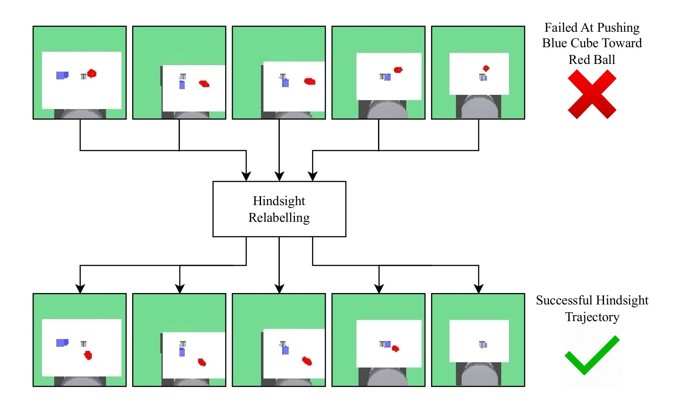

|
Eric Zhu I'm an undergraduate senior at the University of Maryland, College Park, double majoring in Computer Science and Mathematics. During the course of my undergrad, I have worked with Abhinav Shrivastava and Yiannis Aloimonos in computer vision and robotics. I will start graduate school in Fall 2025 as a Master's student at Carnegie Mellon University, researching machine learning applications in robotics. |

|
ResearchI'm interested in computer vision, generative AI, robotics, and 3D world models. My current research focuses on integrating novel view synthesis networks into robotic algorithms. |

|
NeRF-Aug: Data Augmentation for Robotics with Neural Radiance Fields
Eric Zhu, Mara Levy, Matthew Gwilliam, Abhinav Shrivastava Accepted into CoRL Rational Robotics Workshop A novel method that is capable of teaching a policy to interact with objects that are not present in the dataset through the use of NERF based scene augmentation. Paper / arXiv / Project Page |
|

|
Hindsight Experience Replay in the Visual Domain
With Novel View Synthesis Networks
Eric Zhu, Mara Levy, Abhinav Shrivastava UMD Honors Thesis A method that leverages NeRF models to effectively bring a reinforcement learning algorithm called hindsight experience replay into the visual domain. Paper |
|
Feel free to steal this website's source code. Do not scrape this page's HTML as it contains analytics tags. |